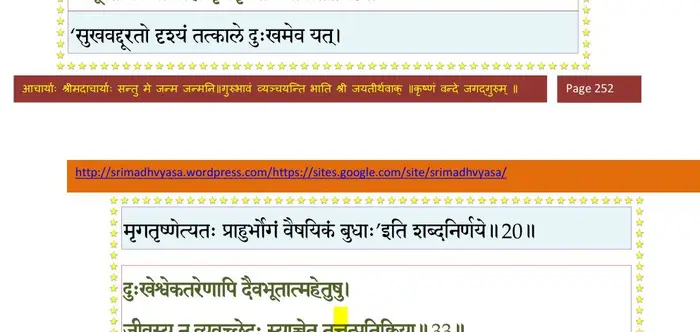
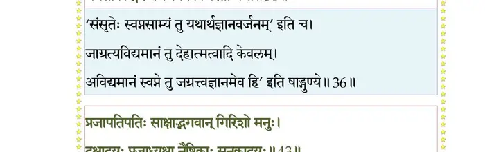
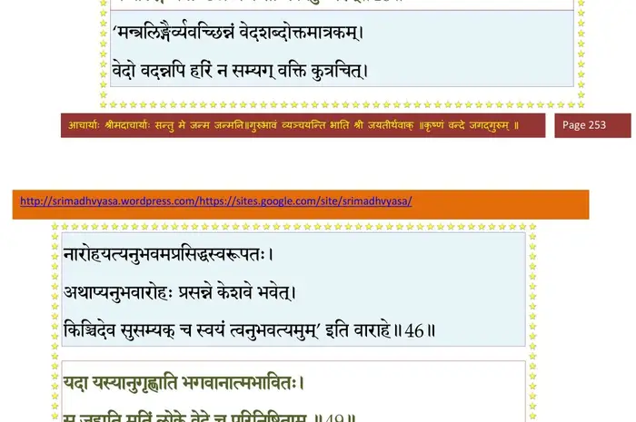
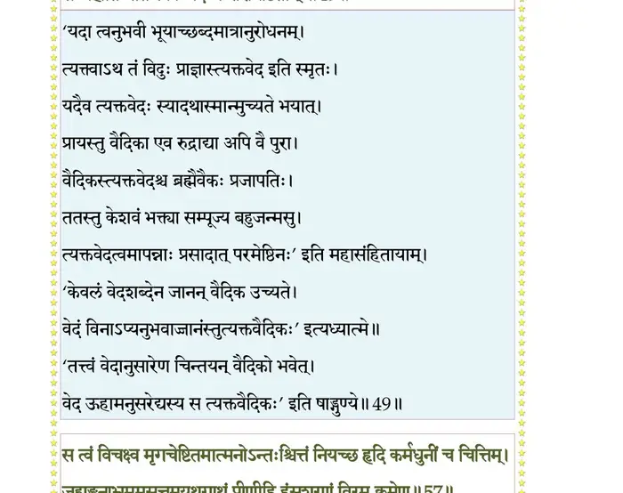
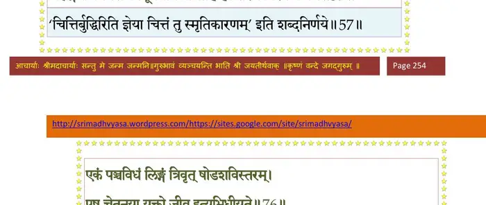
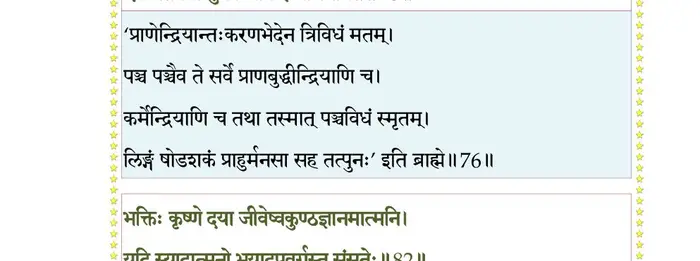
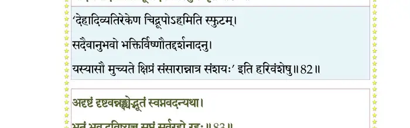
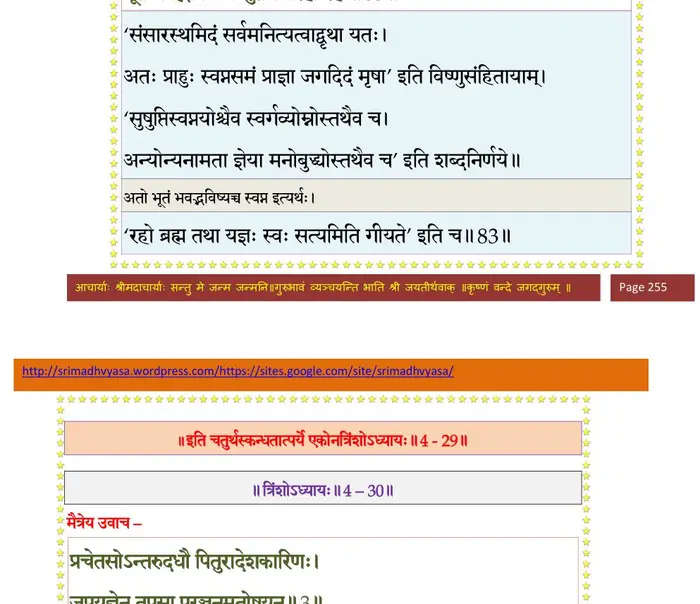

स्कन्ध 4 · अध्याय 29
श्लोक १
प्राचीनबर्हिरुवाच –
भगवंस्ते वचोऽस्माभिर्न सम्यगवगम्यते ।
कवयस्तद्विजानन्ति न वयं कर्ममोहिताः।। १ ।।
भगवंस्ते वचोऽस्माभिर्न सम्यगवगम्यते ।
कवयस्तद्विजानन्ति न वयं कर्ममोहिताः।। १ ।।
श्लोक २
नारद उवाच–
पुरुषं पुरञ्जनं विद्याद् यद् व्यनक्त्यात्मनः पुरम् ।
एकद्वित्रिचतुष्पादं बहुपादमपादकम्।। २ ।।
पुरुषं पुरञ्जनं विद्याद् यद् व्यनक्त्यात्मनः पुरम् ।
एकद्वित्रिचतुष्पादं बहुपादमपादकम्।। २ ।।
श्लोक ३
योऽविज्ञाताह्वयस्तस्य पुरुषस्य सखेश्वरः ।
यन्न विज्ञायते रूपैर्नामभिर्वा क्रियागुणैः।। ३ ।।
यन्न विज्ञायते रूपैर्नामभिर्वा क्रियागुणैः।। ३ ।।
श्लोक ४
यदा जिघृक्षन् पुरुषः कार्त्स्न्येन प्रकृतेर्गुणान् ।
नवद्वारं द्विहस्ताङ्घ्रि पुरं मनुत साध्विति।। ४ ।।
नवद्वारं द्विहस्ताङ्घ्रि पुरं मनुत साध्विति।। ४ ।।
श्लोक ५
बुद्धिं तु प्रमदां विद्यान्ममाहमिति यत्कृतम् ।
यामधिष्ठाय देहेऽस्मिन् पुमान् भुङ्क्तेऽक्षिभिर्गुणान्।। ५ ।।
यामधिष्ठाय देहेऽस्मिन् पुमान् भुङ्क्तेऽक्षिभिर्गुणान्।। ५ ।।
श्लोक ६
सखाय इन्द्रियगणो ज्ञानं कर्म च यत्कृतम् ।
सख्यस्तद्वृत्तयः प्राणः पञ्चवृत्तिर्यथोरगः।। ६ ।।
सख्यस्तद्वृत्तयः प्राणः पञ्चवृत्तिर्यथोरगः।। ६ ।।
श्लोक ७
बृहद्बलं मनो विद्यादुभयेन्द्रियनायकम् ।
पञ्चालाः पञ्चविषयाः यन्मध्ये नवखं पुरम्।। ७ ।।
पञ्चालाः पञ्चविषयाः यन्मध्ये नवखं पुरम्।। ७ ।।
श्लोक ८
अक्षिणी नासिके कर्णौ मुखं शिश्नगुदाविति ।
द्वे द्वे द्वारौ बहिर्याति तत्तदिन्द्रियसंयुतः।। ८ ।।
द्वे द्वे द्वारौ बहिर्याति तत्तदिन्द्रियसंयुतः।। ८ ।।
श्लोक ९
अक्षिणी नासिके आस्यमिति पञ्च पुरस्कृताः ।
दक्षिणा दक्षिणः कर्ण उत्तरा चोत्तरः स्मृतः।। ९ ।।
दक्षिणा दक्षिणः कर्ण उत्तरा चोत्तरः स्मृतः।। ९ ।।
श्लोक १०
पश्चिमे इत्यधोद्वारौ गुदशिश्नाविहोदिते ।
खद्योताविर्मुखी चात्र नेत्रे एकत्र निर्मिते।। १० ।।
खद्योताविर्मुखी चात्र नेत्रे एकत्र निर्मिते।। १० ।।
श्लोक ११
रूपं विभ्राजितं ताभ्यां विचष्टे चक्षुषेश्वरः ।
नलिनी नालिनी नासे गन्धः सौरभ उच्यते।। ११ ।।
नलिनी नालिनी नासे गन्धः सौरभ उच्यते।। ११ ।।
श्लोक १२
घ्राणोऽवधूतो मुख्याऽऽस्यं विपणो रसविद् रसः ।
आपणो व्यवहारोऽत्र चित्रमन्धो बहूदनम्।। १२ ।।
आपणो व्यवहारोऽत्र चित्रमन्धो बहूदनम्।। १२ ।।
श्लोक १३
पितृभूर्दक्षिणः कर्ण उत्तरो देवभूः स्मृतः ।
प्रवृत्तं च निवृत्तं च शास्त्रं पाञ्चालसंज्ञितम्।। १३ ।।
प्रवृत्तं च निवृत्तं च शास्त्रं पाञ्चालसंज्ञितम्।। १३ ।।
श्लोक १४
पितृयानं देवयानं श्रोत्रात् श्रुतधरो व्रजेत् ।
आसुरी मेढ्रमर्वाग् द्वार्व्यवायो ग्रामिणां रतिः।। १४ ।।
आसुरी मेढ्रमर्वाग् द्वार्व्यवायो ग्रामिणां रतिः।। १४ ।।
श्लोक १५
उपस्थो दुर्मदः प्रोक्तो निर्ऋतिर्गुद उच्यते ।
वैशसं नरकं पायुर्लुब्धकोऽन्धौ तु मे शृणु।। १५ ।।
वैशसं नरकं पायुर्लुब्धकोऽन्धौ तु मे शृणु।। १५ ।।
श्लोक १६
हस्तपादौ पुमांस्ताभ्यां युक्तो याति करोति च ।
अन्तःपुरं च हृदयं विषूचिर्मन उच्यते।। १६ ।।
अन्तःपुरं च हृदयं विषूचिर्मन उच्यते।। १६ ।।
श्लोक १७
तत्र मोहं प्रसादं वा हर्षं प्राप्नोति तद्गुणैः ।
यथा यथा विक्रियते गुणाक्तो विकरोति वा।। १७ ।।
यथा यथा विक्रियते गुणाक्तो विकरोति वा।। १७ ।।
श्लोक १८
तथा तथोपद्रष्टाऽऽत्मा तद्वृत्तिरिति कीर्त्यते ।
देहो रथस्त्विन्द्रियाश्वः संवत्सरवयोगतिः।। १८ ।।
देहो रथस्त्विन्द्रियाश्वः संवत्सरवयोगतिः।। १८ ।।
श्लोक १९
द्विकर्मचक्रस्त्रिगुणध्वजः पञ्चासुबन्धुरः ।
मनोरश्मिर्बुद्धिसूतो हृन्नीडो द्वन्द्वकूबरः।। १९ ।।
मनोरश्मिर्बुद्धिसूतो हृन्नीडो द्वन्द्वकूबरः।। १९ ।।
श्लोक २०
पञ्चेन्द्रियार्थप्रक्षेपः सप्तधातुवरूथकः ।
आकूतिर्विक्रमो बाह्यो मृगतृष्णां प्रधावति।। २० ।।
आकूतिर्विक्रमो बाह्यो मृगतृष्णां प्रधावति।। २० ।।
भागवततात्पर्यनिर्णय

श्लोक २१
एकादशेन्द्रियचमूः पञ्चसूनाविनोदकृत् ।
संवत्सरश्चण्डवेगः कालो येनोपलक्षितः।। २१ ।।
संवत्सरश्चण्डवेगः कालो येनोपलक्षितः।। २१ ।।
श्लोक २२
तस्याहानीह गन्धर्वा गन्धर्व्यो रात्रयः स्मृताः ।
हरन्त्यायुः परिक्रान्त्या षष्ट्युत्तरशतत्रयम्।। २२ ।।
हरन्त्यायुः परिक्रान्त्या षष्ट्युत्तरशतत्रयम्।। २२ ।।
श्लोक २३
कालकन्या जरा साक्षाल्लोकस्तां नाभिनन्दति ।
स्वसारं जगृहे मृत्युः क्षयाय यवनेश्वरः।। २३ ।।
स्वसारं जगृहे मृत्युः क्षयाय यवनेश्वरः।। २३ ।।
श्लोक २४
आधयो व्याधयस्तस्य सैनिकाः यवनाः खलाः ।
भूतोपसर्गा अरयः प्रज्वारो विविधो ज्वरः।। २४ ।।
भूतोपसर्गा अरयः प्रज्वारो विविधो ज्वरः।। २४ ।।
श्लोक २५
एवं बहुविधैर्दुःखैर्दैवभूतात्मसम्भवैः ।
क्लिश्यमानः शतं वर्षं देहे देही तमोवृतः।। २५ ।।
क्लिश्यमानः शतं वर्षं देहे देही तमोवृतः।। २५ ।।
श्लोक २६
प्राणेन्द्रियमनोधर्मानात्मन्यध्यस्य निर्गुणः ।
शेते कामलवं ध्यायन् ममाहमिति कर्मकृत्।। २६ ।।
शेते कामलवं ध्यायन् ममाहमिति कर्मकृत्।। २६ ।।
श्लोक २७
यदाऽऽत्मानमविज्ञाय भगवन्तं परं गुरुम् ।
पुरुषस्तु विषज्जेत गुणेषु प्राकृतेष्वदृक्।। २७ ।।
पुरुषस्तु विषज्जेत गुणेषु प्राकृतेष्वदृक्।। २७ ।।
श्लोक २८
गुणाभिमानी स तदा कर्माणि कुरुतेऽवशः ।
शुक्लं कृष्णं लोहितं वा यथाकर्माभिजायते।। २८ ।।
शुक्लं कृष्णं लोहितं वा यथाकर्माभिजायते।। २८ ।।
श्लोक २९
शुक्लान् प्रकाशभूयिष्ठान् लोकानाप्नोति कर्हिचित् ।
दुःखोदर्कान् क्रियायासान् तमश्शोकोत्कटान् क्वचित्।। २९ ।।
दुःखोदर्कान् क्रियायासान् तमश्शोकोत्कटान् क्वचित्।। २९ ।।
श्लोक ३०
क्वचित् पुमान् क्वचिच्च स्त्री क्वचिन्नोभयमन्धधीः ।
देवो मनुष्यस्तिर्यग् वा यथाकर्मगुणं भवः।। ३० ।।
देवो मनुष्यस्तिर्यग् वा यथाकर्मगुणं भवः।। ३० ।।
श्लोक ३१
क्षुत्परीतो यथा दीनः सारमेयो गृहं गृहम् ।
चरन् विन्दति यद् दिष्टं दण्डमोदनमेव वा।। ३१ ।।
चरन् विन्दति यद् दिष्टं दण्डमोदनमेव वा।। ३१ ।।
श्लोक ३२
तथा कामाशयो जीव उच्चावचपथा भ्रमन् ।
उपर्यधो वा मध्ये वा याति दिष्टं प्रियाप्रियम्।। ३२ ।।
उपर्यधो वा मध्ये वा याति दिष्टं प्रियाप्रियम्।। ३२ ।।
श्लोक ३३
दुःखेष्वेकतरेणापि दैवभूतात्महेतुषु ।
जीवस्य न व्यवच्छेदः स्याच्चेत् तत्तत्प्रतिक्रिया।। ३३ ।।
जीवस्य न व्यवच्छेदः स्याच्चेत् तत्तत्प्रतिक्रिया।। ३३ ।।
भागवततात्पर्यनिर्णय
श्लोक ३४
यथा हि पुरुषा भारं शिरसा गुरुमुद्वहन् ।
तं स्कन्धेन स आधत्ते तथा सर्वाः प्रतिक्रियाः।। ३४ ।।
तं स्कन्धेन स आधत्ते तथा सर्वाः प्रतिक्रियाः।। ३४ ।।
श्लोक ३५
नैकान्ततः प्रतीकारः कर्मणां कर्म केवलम् ।
द्वयं ह्यविद्योपसृतं स्वप्ने स्वप्न इवानघ।। ३५ ।।
द्वयं ह्यविद्योपसृतं स्वप्ने स्वप्न इवानघ।। ३५ ।।
श्लोक ३६
अर्थे ह्यविद्यमानेऽपि संसृतिर्न निवर्तते ।
मनसा लिङ्गरूपेण स्वप्ने विचरतो यथा।। ३६ ।।
मनसा लिङ्गरूपेण स्वप्ने विचरतो यथा।। ३६ ।।
भागवततात्पर्यनिर्णय

श्लोक ३७
अथात्मनोऽर्थभूतस्य यतोऽनर्थपरम्परा ।
संसृतिस्तद्व्यवच्छेदो भक्त्या परमया हरौ।। ३७ ।।
संसृतिस्तद्व्यवच्छेदो भक्त्या परमया हरौ।। ३७ ।।
श्लोक ३८
वासुदेवे भगवति भक्तियोगः समाहितः ।
सध्रीचीनेन वैराग्यं ज्ञानं च जनयिष्यति।। ३८ ।।
सध्रीचीनेन वैराग्यं ज्ञानं च जनयिष्यति।। ३८ ।।
श्लोक ३९
सोऽचिरादिव राजर्षे स्यादच्युतकथाश्रयः ।
शृण्वतः श्रद्धधानस्य नित्यदा स्यादधीयतः।। ३९ ।।
शृण्वतः श्रद्धधानस्य नित्यदा स्यादधीयतः।। ३९ ।।
श्लोक ४०
यत्र भागवता राजन् साधवो विशदाशयाः ।
भगवद्गुणानुकथनश्रवणाव्यग्रचेतसः।। ४० ।।
भगवद्गुणानुकथनश्रवणाव्यग्रचेतसः।। ४० ।।
श्लोक ४१
तस्मिन् महन्मुखरिता मधुभिच्चरित्र-
पीयूषतोयसरितः परितः स्रवन्ति ।
ता ये पिबन्त्यनुसवं नृप गाढकर्णैः
तान् न स्पृशन्त्यशनतृड्भयशोकमोहाः।। ४१ ।।
पीयूषतोयसरितः परितः स्रवन्ति ।
ता ये पिबन्त्यनुसवं नृप गाढकर्णैः
तान् न स्पृशन्त्यशनतृड्भयशोकमोहाः।। ४१ ।।
श्लोक ४२
एतैरुपद्रुतो नित्यं जीवलोकः स्वभावजैः ।
न करोति हरेर्नूनं कथामृतनिधौ रतिम्।। ४२ ।।
न करोति हरेर्नूनं कथामृतनिधौ रतिम्।। ४२ ।।
श्लोक ४३
प्रजापतिपतिः साक्षाद्भगवान् गिरिशो मनुः ।
दक्षादयः प्रजाध्यक्षा नैष्ठिकाः सनकादयः।। ४३ ।।
दक्षादयः प्रजाध्यक्षा नैष्ठिकाः सनकादयः।। ४३ ।।
भागवततात्पर्यनिर्णय
श्लोक ४४
मरीचिरत्र्यङ्गिरसौ पुरस्त्यः पुलहः क्रतुः ।
भृगुर्वसिष्ठ इत्येते मदन्ता ब्रह्मवादिनः।। ४४ ।।
भृगुर्वसिष्ठ इत्येते मदन्ता ब्रह्मवादिनः।। ४४ ।।
भागवततात्पर्यनिर्णय
श्लोक ४५
अद्यापि वाचस्पतयस्तपोविद्यासमाधिभिः ।
पश्यन्तोऽपि न पश्यन्ति तद् विष्णोः परमं पदम्।। ४५ ।।
पश्यन्तोऽपि न पश्यन्ति तद् विष्णोः परमं पदम्।। ४५ ।।
श्लोक ४६
शब्दब्रह्मणि दुष्पारे चरन्त उरुविस्तरे ।
मन्त्रलिङ्गैर्व्यवच्छिन्नं भजन्तो न विदुः परम्।। ४६ ।।
मन्त्रलिङ्गैर्व्यवच्छिन्नं भजन्तो न विदुः परम्।। ४६ ।।
भागवततात्पर्यनिर्णय

श्लोक ४७
सर्वेषामपि जन्तूनां सततं देहपोषणे ।
अस्ति प्रज्ञा समायत्ता को विशेषस्तया नृणाम्।। ४७ ।।
अस्ति प्रज्ञा समायत्ता को विशेषस्तया नृणाम्।। ४७ ।।
श्लोक ४८
लब्ध्वेहान्ते मनुष्यत्वं हित्वा देहाद्यसद्ग्रहम् ।
आत्मसृत्या विहायेदं जीवात्मा स विशिष्यते।। ४८ ।।
आत्मसृत्या विहायेदं जीवात्मा स विशिष्यते।। ४८ ।।
श्लोक ४९
यदा यस्यानुगृह्णाति भगवानात्मभावितः ।
स जहाति मतिं लोके वेदे च परिनिष्ठिताम्।। ४९ ।।
स जहाति मतिं लोके वेदे च परिनिष्ठिताम्।। ४९ ।।
भागवततात्पर्यनिर्णय

श्लोक ५०
तस्मात् कर्मसु बर्हिष्मन्नज्ञानादर्थकाशिषु ।
माऽर्थदृष्टिं कृथाः श्रोत्रस्पर्शिष्वस्पृष्टवस्तुषु।। ५० ।।
माऽर्थदृष्टिं कृथाः श्रोत्रस्पर्शिष्वस्पृष्टवस्तुषु।। ५० ।।
श्लोक ५१
खलोकं न विदुस्ते वै यत्र देवो जनार्दनः ।
आहुर्धूम्रधियो वेदं सकर्मकमतद्विदः।। ५१ ।।
आहुर्धूम्रधियो वेदं सकर्मकमतद्विदः।। ५१ ।।
श्लोक ५२
आस्तीर्य दर्भैः प्रागग्रैः कार्त्स्न्येन क्षितिमण्डलम् ।
ततो बृहद्वधान्मानी कर्म नावैषि यत् परम्।। ५२ ।।
ततो बृहद्वधान्मानी कर्म नावैषि यत् परम्।। ५२ ।।
श्लोक ५३
तत् कर्म हरितोषं यत् सा विद्या तन्मतिर्यया ।
हरिर्देहभृतामात्मा स्वयं प्रकृतिरीश्वरः।। ५३ ।।
हरिर्देहभृतामात्मा स्वयं प्रकृतिरीश्वरः।। ५३ ।।
श्लोक ५४
तत्पादमूलं शरणं यतः क्षेमो नृणामिह ।
सवै प्रियतमो ह्यस्य यतो न भयमण्वपि ।
इति वेद स वै विद्वान् यो विद्वान् स गुरुर्हरिः।। ५४ ।।
सवै प्रियतमो ह्यस्य यतो न भयमण्वपि ।
इति वेद स वै विद्वान् यो विद्वान् स गुरुर्हरिः।। ५४ ।।
श्लोक ५५
नारद उवाच–
प्रश्न एवं हि संच्छिन्नो भवतः पुरुषर्यभ ।
अत्र मे वदतो गुह्यं निशामय सुनिश्चितम्।। ५५ ।।
प्रश्न एवं हि संच्छिन्नो भवतः पुरुषर्यभ ।
अत्र मे वदतो गुह्यं निशामय सुनिश्चितम्।। ५५ ।।
श्लोक ५६
क्षुद्रञ्चरं सुमनसां शरणे मथित्वा
रक्तं षडङ्घ्रिगणसामसुलुब्धकर्मणम् ।
अग्रे वृकानसुहृदोऽविगणय्य यान्तं
पृष्ठे मृगं मृगयुलुब्धकबाणभिन्नम्।। ५६ ।।
रक्तं षडङ्घ्रिगणसामसुलुब्धकर्मणम् ।
अग्रे वृकानसुहृदोऽविगणय्य यान्तं
पृष्ठे मृगं मृगयुलुब्धकबाणभिन्नम्।। ५६ ।।
श्लोक ५६
(अस्यार्थः)
सुमनः समधर्मणां स्त्रीणां शरण आश्रमे पुष्पमधुगन्धवत्क्षुद्रतमं काम्यकर्मविपाकजं कामसुखलवं जैह्व्यौपस्थ्यादि विचिन्वन्तं मिथुनीभूय तदभिनिवेशितमनसं षडङ्घ्रिगणसामगीतवदतिमनोहरवनितादि-जनालापेष्वतितरामतिप्रलोभितकर्णमग्रे वृकयूथवदात्मन आयुर्हरतोऽ-होरात्रान्तान् काललवविशेषानविगणय्य गृहेषु विहरन्तं पृष्ठत एव परोक्षमनुप्रवृत्तो लुब्धकः कृतान्तोऽन्तःशरेण यमिह पराविध्यति तमिम-मात्मानमहो राजन् भिन्नहृदयं द्रष्टुमर्हसीति ।। ५६ ।।
सुमनः समधर्मणां स्त्रीणां शरण आश्रमे पुष्पमधुगन्धवत्क्षुद्रतमं काम्यकर्मविपाकजं कामसुखलवं जैह्व्यौपस्थ्यादि विचिन्वन्तं मिथुनीभूय तदभिनिवेशितमनसं षडङ्घ्रिगणसामगीतवदतिमनोहरवनितादि-जनालापेष्वतितरामतिप्रलोभितकर्णमग्रे वृकयूथवदात्मन आयुर्हरतोऽ-होरात्रान्तान् काललवविशेषानविगणय्य गृहेषु विहरन्तं पृष्ठत एव परोक्षमनुप्रवृत्तो लुब्धकः कृतान्तोऽन्तःशरेण यमिह पराविध्यति तमिम-मात्मानमहो राजन् भिन्नहृदयं द्रष्टुमर्हसीति ।। ५६ ।।
श्लोक ५७
स त्वं विचक्ष्व मृगचेष्ठितमात्मनोऽन्त-
श्चित्तं नियच्छ हृदि कर्णधुनीं च चित्तिम् ।
जह्यङ्गनाश्रममसत्तमयूथगाथं
प्रीणीहि हंसशरणं विरम क्रमेण।। ५७ ।।
श्चित्तं नियच्छ हृदि कर्णधुनीं च चित्तिम् ।
जह्यङ्गनाश्रममसत्तमयूथगाथं
प्रीणीहि हंसशरणं विरम क्रमेण।। ५७ ।।
भागवततात्पर्यनिर्णय

श्लोक ५८
राजोवाच–
श्रुतमन्वीक्षितं ब्रह्मन् भगवान् यदभाषत ।
नैतज्जानत्युपाध्यायाः किन्न ब्रूयुर्विदुर्यदि।। ५८ ।।
श्रुतमन्वीक्षितं ब्रह्मन् भगवान् यदभाषत ।
नैतज्जानत्युपाध्यायाः किन्न ब्रूयुर्विदुर्यदि।। ५८ ।।
श्लोक ५९
संशयोऽत्र न मे विप्र संच्छिन्नस्तत्कृतो महान् ।
ऋषयोऽपि हि मुह्यन्ति यत्र नेन्द्रियवृत्तयः।। ५९ ।।
ऋषयोऽपि हि मुह्यन्ति यत्र नेन्द्रियवृत्तयः।। ५९ ।।
श्लोक ६०
कर्माण्यारभते येन पुमानिह विहाय तम् ।
अमुत्रान्येन देहेन जुष्टान्यसकृदश्नुते।। ६० ।।
अमुत्रान्येन देहेन जुष्टान्यसकृदश्नुते।। ६० ।।
श्लोक ६१
इति वेदविदां वाचः श्रूयन्ते तत्र तत्र ह ।
कर्म च क्रियते प्रोक्तं परोक्षं न प्रकाशते।। ६१ ।।
कर्म च क्रियते प्रोक्तं परोक्षं न प्रकाशते।। ६१ ।।
श्लोक ६२
नारद उवाच–
येनैवारभते कर्म तेनैवामुत्र तत् पुमान् ।
भुङ्क्ते ह्यव्यवधानेन लिङ्गेन मनसा स्वकम्।। ६२ ।।
येनैवारभते कर्म तेनैवामुत्र तत् पुमान् ।
भुङ्क्ते ह्यव्यवधानेन लिङ्गेन मनसा स्वकम्।। ६२ ।।
श्लोक ६३
शयानमिममुत्सुज्य श्वसन्तं पुरुषो यथा ।
कर्मात्मन्याहितं भुङ्क्ते तादृशेनेतरेण वा।। ६३ ।।
कर्मात्मन्याहितं भुङ्क्ते तादृशेनेतरेण वा।। ६३ ।।
श्लोक ६४
ममेति मनसा यद् यदसावहमिति ब्रुवन् ।
गृह्णीयात् तत् पुमान् राद्धं कर्म येन पुनर्भवः।। ६४ ।।
गृह्णीयात् तत् पुमान् राद्धं कर्म येन पुनर्भवः।। ६४ ।।
श्लोक ६५
यथाऽनुमीयते चित्तमुभयैरिन्द्रियेहितैः ।
एवं प्राग्देहजं कर्म लक्ष्यते चित्तवृत्तिभिः।। ६५ ।।
एवं प्राग्देहजं कर्म लक्ष्यते चित्तवृत्तिभिः।। ६५ ।।
श्लोक ६६
नानुभूतं क्व चानेन देहेनादृष्टमश्रुतम् ।
कदाचिदुपलभ्येत यद्रूपं यादृगात्मनि।। ६६ ।।
कदाचिदुपलभ्येत यद्रूपं यादृगात्मनि।। ६६ ।।
श्लोक ६७
तेनास्य तादृशो राजन् लिङ्गिनो देहसम्भवः ।
श्रद्धस्वाननुभूतार्थं न मनः स्प्रष्टुमर्हति।। ६७ ।।
श्रद्धस्वाननुभूतार्थं न मनः स्प्रष्टुमर्हति।। ६७ ।।
श्लोक ६८
मन एव मनुष्यस्य पूर्वरूपाणि शंसति ।
भविष्यतश्च भद्रं ते तथैव नभविष्यतः।। ६८ ।।
भविष्यतश्च भद्रं ते तथैव नभविष्यतः।। ६८ ।।
श्लोक ६९
अदृष्टमश्रुतं चेह क्वचिन्मनसि दृश्यते ।
यथा तथाऽनुमन्तव्यं देशकालक्रियाश्रयम्।। ६९ ।।
यथा तथाऽनुमन्तव्यं देशकालक्रियाश्रयम्।। ६९ ।।
श्लोक ७०
सर्वे क्रमानुरोधेन मनसीन्द्रियगोचराः ।
आयान्ति वर्गशो यान्ति सर्वे सुमनसो जवात्।। ७० ।।
आयान्ति वर्गशो यान्ति सर्वे सुमनसो जवात्।। ७० ।।
श्लोक ७१
सत्त्वैकनिष्ठे मनसि भगवत्पार्श्ववर्तिनि ।
तमश्चन्द्रमसीवेदमुपरज्यावभासते।। ७१ ।।
तमश्चन्द्रमसीवेदमुपरज्यावभासते।। ७१ ।।
श्लोक ७२
नाहंममेति भावोऽयं पुरुषे व्यवधीयते ।
तावद् बुद्धिमनोऽक्षार्थगुणव्यूहो ह्यनादिमान्।। ७२ ।।
तावद् बुद्धिमनोऽक्षार्थगुणव्यूहो ह्यनादिमान्।। ७२ ।।
श्लोक ७३
सुप्तिमूर्च्छोपतापेषु प्राणायनविघाततः ।
नेहतेऽहमिति ज्ञानं मृत्युप्रज्वारयोरपि।। ७३ ।।
नेहतेऽहमिति ज्ञानं मृत्युप्रज्वारयोरपि।। ७३ ।।
श्लोक ७४
गर्भे बाल्येऽप्यपौष्कल्यादेकादशविधं तदा ।
लिङ्गं न दृश्यतेऽयूनः कुह्वां चन्द्रमसो यथा।। ७४ ।।
लिङ्गं न दृश्यतेऽयूनः कुह्वां चन्द्रमसो यथा।। ७४ ।।
श्लोक ७५
अर्थे ह्यविद्यमानेऽपि संसृतिर्न निवर्तते ।
ध्यायतो विषयानस्य स्वप्नेऽनर्थागमो यथा।। ७५ ।।
ध्यायतो विषयानस्य स्वप्नेऽनर्थागमो यथा।। ७५ ।।
श्लोक ७६
एकं पञ्चविधं लिङ्गं त्रिवृत् षोडशविस्तरम् ।
एष चेतनया युक्तो जीव इत्यभिधीयते।। ७६ ।।
एष चेतनया युक्तो जीव इत्यभिधीयते।। ७६ ।।
भागवततात्पर्यनिर्णय

श्लोक ७७
अनेन पुरुषो देहानुपादत्ते विमुञ्चति ।
हर्षं शोकं भयं दुःखं सुखं चानेन विन्दति।। ७७ ।।
हर्षं शोकं भयं दुःखं सुखं चानेन विन्दति।। ७७ ।।
श्लोक ७८
यथा तृणजलूका च नोपयात्यपयाति च ।
न त्यजेन्म्रियमाणोऽपि प्राग्देहाभिमतिं जनः।। ७८ ।।
न त्यजेन्म्रियमाणोऽपि प्राग्देहाभिमतिं जनः।। ७८ ।।
श्लोक ७९
यावदन्यं न विन्देत व्यवधानेन कर्मणाम् ।
मन एव मनुष्येन्द्र भूतानां भवभावनम्।। ७९ ।।
मन एव मनुष्येन्द्र भूतानां भवभावनम्।। ७९ ।।
श्लोक ८०
यदक्षैश्चरितं ध्यायन् कर्माण्याचिनुतेऽसकृत् ।
सति कर्मण्यविद्यायां बन्धः कर्मण्य आत्मनः।। ८० ।।
सति कर्मण्यविद्यायां बन्धः कर्मण्य आत्मनः।। ८० ।।
श्लोक ८१
अतस्तदपबाधार्थं भज सर्वात्मना हरिम् ।
पश्यंस्तदात्मकं विश्वं स्थित्युत्पत्त्यप्यया यतः।। ८१ ।।
पश्यंस्तदात्मकं विश्वं स्थित्युत्पत्त्यप्यया यतः।। ८१ ।।
श्लोक ८२
भक्तिः कृष्णे दया जीवेष्वकुण्ठज्ञानमात्मनि ।
यदि स्यादात्मनो भूयादपवर्गस्तु संसृतेः।। ८२ ।।
यदि स्यादात्मनो भूयादपवर्गस्तु संसृतेः।। ८२ ।।
भागवततात्पर्यनिर्णय

श्लोक ८३
अदृष्टं दृष्टवन्नङ्क्ष्येदभूतं स्वप्नवदन्यथा ।
भूतं भवद् भविष्यच्च सुप्तं सर्वरहोरहः।। ८३ ।।
भूतं भवद् भविष्यच्च सुप्तं सर्वरहोरहः।। ८३ ।।
भागवततात्पर्यनिर्णय

श्लोक ८४
मैत्रेय उवाच–
भागवतमुख्यो भगवान् नारदो हंसयोर्गतिम् ।
प्रदर्श्य ह्यमुमामन्त्र्य सिद्धलोकं ततोऽगमत्।। ८४ ।।
भागवतमुख्यो भगवान् नारदो हंसयोर्गतिम् ।
प्रदर्श्य ह्यमुमामन्त्र्य सिद्धलोकं ततोऽगमत्।। ८४ ।।
श्लोक ८५
प्राचीनबर्ही राजर्षिः प्रजासर्गाभिरक्षणे ।
आदिश्य पुत्रानगमत् तपसे कपिलाश्रमम्।। ८५ ।।
आदिश्य पुत्रानगमत् तपसे कपिलाश्रमम्।। ८५ ।।
श्लोक ८६
तत्रैकाग्रमता वीरो गोविन्दचरणाम्बुजम् ।
विमुक्तसङ्गोऽनुभजन् भक्त्या तत्साम्यतामगात्।। ८६ ।।
विमुक्तसङ्गोऽनुभजन् भक्त्या तत्साम्यतामगात्।। ८६ ।।
श्लोक ८७
एतदध्यात्मपारोक्ष्यं गीतं देवर्षिणाऽनघ ।
यः श्रावयेद् यः श्रुणुयात् स लिङ्गेन विमुच्यते।। ८७ ।।
यः श्रावयेद् यः श्रुणुयात् स लिङ्गेन विमुच्यते।। ८७ ।।
श्लोक ८८
एतन्मुकुन्दयशसा भुवनं पुनानं
देवर्षिवर्यमुखनिःसृतमात्मशौचम् ।
यः कीर्त्यमानमधिगच्छति पारमेष्ठ्यं
नास्मिन् भवे भ्रमति मुक्तसमस्तबन्धः।। ८८ ।।
देवर्षिवर्यमुखनिःसृतमात्मशौचम् ।
यः कीर्त्यमानमधिगच्छति पारमेष्ठ्यं
नास्मिन् भवे भ्रमति मुक्तसमस्तबन्धः।। ८८ ।।
श्लोक ८९
अध्यात्मपारोक्ष्यमिदं मयाऽधिगतमद्भुतम् ।
एवं त्रय्याश्रयः पुंसश्छिन्नोऽमुत्र च संशयः।। ८९ ।।
एवं त्रय्याश्रयः पुंसश्छिन्नोऽमुत्र च संशयः।। ८९ ।।
।। इति श्रीमद्भागवते चतुर्थस्कन्धे एकोनत्रिंशोऽध्यायः ।।